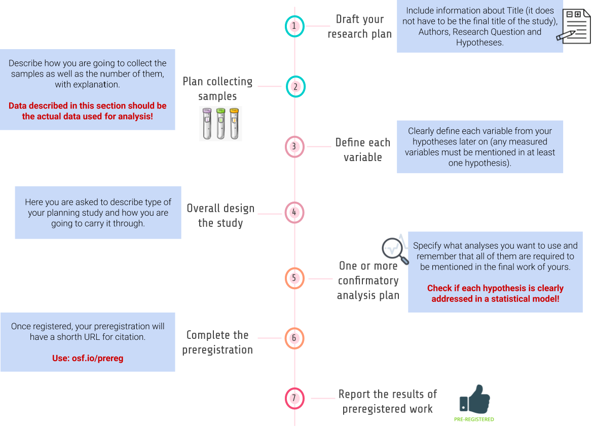

Welcome to reproducible-neuroimaging’s documentation!¶
Contents¶
Introduction¶
The progress of science is based on valuable research. While reading the research paper you naturally trust the researchers that the presented results are true and that you can build your research upon them. Recent reports show, however, that scientists are not able to reproduce a large amount of published research. In this section we introduce you to the concept of reproducibility in research, reasons of reproducibility crisis, and motivations to lead reproducible research. Finally, we present you three steps that might improve reproducibility in your research.
Reproducibility in science¶
The goal of scientific research is to build reliable knowledge. To approach this, scientists should be able to repeat the analysis and replicate findings of other researchers. The individual research should be transparent and well documented so it can be verified by other scientists.
Reproducibility stands for “obtaining consistent results using the same input data, computational steps, methods, and code, and conditions of analysis”. It is also important to distinguish the reproducibility from replicability that stands for “obtaining consistent results across studies aimed at answering the same scientific question, each of which has obtained its own data” [NAS, 2018].
By increasing reproducibility of your research, you also increase its replicability.
Reproducibility crisis¶
Intuitively, the published research results should be reliable and trustworthy. Recent alarming reports showed that it is difficult to reproduce or replicate results in various medical, life and behavioural sciences (Open Science Collaboration, OSC 2015). According to Stanford Encyclopedia of Philosophy, evidence suggesting that we face reproducibility crisis include:
- absence of replication studies in the published literature in many scientific fields (e.g., Makel, Plucker, & Hegarty 2012),
- failure to reproduce results of published studies in large systematic replication projects (e.g., OSC 2015; Begley & Ellis 2012),
- evidence of publication bias (Fanelli 2010a),
- a high prevalence of “questionable research practices”, which inflate the rate of false positives in the literature (Simmons, Nelson, & Simonsohn 2011; John, Loewenstein, & Prelec 2012; Agnoli et al. 2017; Fraser et al. 2018), and
- the documented lack of transparency and completeness in the reporting of methods, data and analysis in scientific publication (Bakker & Wicherts 2011; Nuijten et al. 2016).
Reasons of reproducibility crisis¶
Motivations for reproducible research¶
Three steps to more reproducible research¶
The goal of this handbook is to guide you through essential research practices that will increase reproducibility in your neuroimaging research. For simplicity, we divided this material into 3 steps: (1) share your research plan, (2) share your data, and (3) share your code.
- Step 1: Share your research plan
Here we guide you on what you should know before starting collecting your data and/or performing a new data analysis. We introduce you to concepts of pre-registration and pre-registered reports.
- Step 2: Share your data
Here we help you to set up your data management plan, structure and name your project files, and share your data in open repositories.. We introduce you to Brain Imaging Data Structure (BIDS) formatting and controlling versions of your data with DataLad.
- Step 3: Share your code
Here we explain how to create a reproducible data analysis workflow. We introduce you to concepts of version control (Git/GitHub), containers (Docker), and good practices for coding and documenting your analysis.
Preregistration¶
Preregistration is the practice of registering research plan before they are conducted. The preregistered report format requires reseachers to submit a description of the confirmatory hypotheses, variables, study methods and analysis plan prior to data collection. This practice allows researchers to circumvent the publication bias toward significant findings and prevent the data from taking you hostage. Preregistration makes the distinction between hypothesis testing and exploratory (hypothesis generating) research more clear. Data set won’t affect hypothesis and vice versa.
Click here to see some examples of preregistrations segregated by discipline and study type.
Types of preregistration¶
- Unreviewed
Unreviewed registration report contains detailed description of researcher’s plans for a study as possible, and researcher saves those plans in a time-stamped, uneditable archive; can be shared with reviewers, editors, and other researchers.
- Reviewed
In reviewed registration report researcher submits a detailed proposal for a study to a journal before conducting the study (these registered reports have the same virtues as preregistration, but they also address the problem of publication bias because the studies are published regardless of their outcomes!); proposed study will be informative regardless of its outcome.
- RRR - Registered Replication Reports
In registered replication reports researchers direct replication of one or more original findings. Many labs follow the same preregistered plan, and the results from all of those independent studies are published collectively regardless of the outcomes of individual studies.
How to make a preregistration?¶
Follow a template from Open Science Framework at Word / GoogleDocs or AsPredicted and fill it with your own research ideas.
Rules of preregistration¶
- Once registered, your preregistration will have a short URL for citation. Remember to include a link to your registration report.
- Report the results of ALL preregistered analyses regardless of outcome.
- ANY unregistered analyses must be transparently reported as exploratory finding Do not stop yourself before make transparent changes to analysis plan but remember to report the change and its justification (it have to be reported somehow as intuitive suggestions).